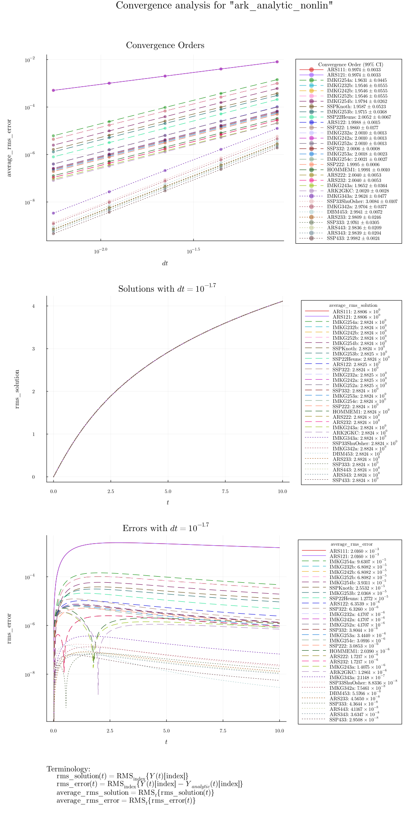

Algorithm Convergence Order
The numerical convergence order of an ODE solver reflects the rate at which its discretization error decreases as the timestep size $\Delta t$ is reduced. An algorithm of order $p$, operating within its asymptotic convergence regime, satisfies an overall global error bound of the form:
\[\text{error}(\Delta t) \le C (\Delta t)^p\]
In ClimaTimeSteppers.jl, algorithms are rigorously verified during CI to ensure they achieve their theoretical convergence order $p$ under both explicit and implicit integration dynamics.
Test Cases
Convergence is assessed on a suite of test problems that exercise different combinations of explicit, implicit, and coupled tendencies:
| Test case | ODE | Tendencies used | Reference solution |
|---|---|---|---|
ark_analytic | $y' = \lambda y + \tfrac{1}{1+t^2} - \lambda \arctan(t)$, $y(0) = 0$, $\lambda = -100$; solution $y = \arctan(t)$ | Linear T_imp! ($\lambda y$) + explicit source T_exp! | Analytic |
ark_analytic_sys | $Y' = AY$, $Y_0 = (1,1,1)^T$; $A$ has eigenvalues $-\tfrac{1}{2}$, $-\tfrac{1}{10}$, $-100$; treated fully implicitly | Linear T_imp! (3×3 system, no T_exp!) | Analytic |
ark_onewaycouple_mri | $Y' = LY$, $Y_0 = (1,0,2)^T$; fast oscillatory modes ($\omega = 50$) one-way coupled to slow decay; treated fully implicitly | Linear T_imp! (3×3 system, no T_exp!) | Analytic |
ark_analytic_nonlin | $y' = (t+1)e^{-y}$, $y(0) = 0$; solution $y = \ln(t^2/2 + t + 1)$; nonlinear implicit | Nonlinear T_imp! (no T_exp!) | Analytic |
1d_heat_equation | $u_t = \partial_{zz} u$ on $[0,1]$ with Dirichlet BCs; finite-difference Laplacian | Linear T_exp! | Analytic (discrete eigenvalue) |
2d_heat_equation | $u_t = (\partial_{xx} + \partial_{yy}) u$ on $[0,1]^2$ with Dirichlet BCs; Kronecker finite-difference Laplacian | Linear T_exp! | Analytic (discrete eigenvalue) |
stiff_linear | $u' = A_\text{imp} u + A_\text{exp} u$, $A_\text{imp} = \mathrm{diag}(-\lambda,0)$, $A_\text{exp} = \bigl[\begin{smallmatrix}0&1\\1&-1\end{smallmatrix}\bigr]$, $\lambda=1000$ | Linear T_imp! + linear T_exp! | Numerical (ARK548L2SA2) |
For each test case, the convergence order is estimated by computing root-mean-square errors at several timestep sizes and fitting the slope on a log-log scale. The estimate computed_order ± order_uncertainty is required to satisfy:
|computed_order - predicted_order| ≤ order_uncertaintyorder_uncertainty ≤ predicted_order / 10
By Godunov's theorem, the use of a monotonicity-preserving limiter reduces the convergence order of any algorithm to 1, so convergence tests are only run on unlimited tendencies.
Convergence Summary: ark_analytic_nonlin
The figure below is generated automatically during the documentation build by running report_gen_alg.jl for each algorithm and then collecting results with summarize_convergence.jl. It shows all tested algorithms overlaid on the ark_analytic_nonlin test case (a scalar ODE with a nonlinear implicit tendency) — this is by far the most commonly supported test case across all algorithm families.

The three panels show:
- Top — Convergence Orders: The average RMS error vs. $\Delta t$ on a log-log scale for every algorithm. Algorithms are grouped by line style according to their theoretical order, and the legend reports the empirically computed order $\pm$ uncertainty (99% confidence interval). Methods of order $p$ should trace a slope of $-p$.
- Middle — Solutions: The RMS solution norm over time at a representative fixed $\Delta t$ for each algorithm.
- Bottom — Errors: The RMS error over time at the same fixed $\Delta t$.
When inspecting empirical convergence trends:
- Asymptotic regime: The initial slope should closely match $O(\Delta t^p)$ for an order-$p$ method.
- Round-off floor: At very small $\Delta t$, floating-point precision sets a lower bound on achievable accuracy, causing the error curve to plateau.
- Order reduction: For some methods and splittings, the empirically observed order may be lower than the theoretical order due to order reduction effects in the IMEX coupling (see Gardner et al. (2018) for discussion).
Generating Convergence Reports
To generate convergence plots locally or run the analysis for individual algorithms, see the Developer Guide.
Cross-reference: For details on how stability limits interact with convergence under stiff conditions, see the Stability page.